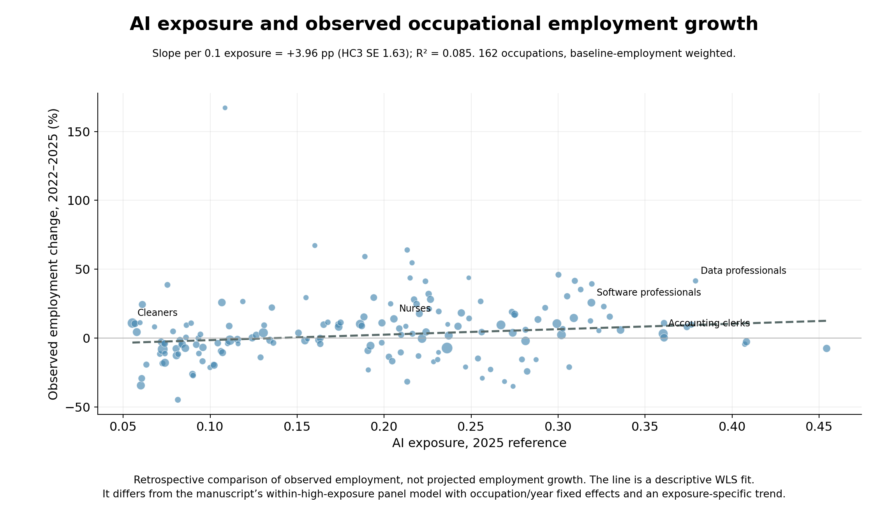
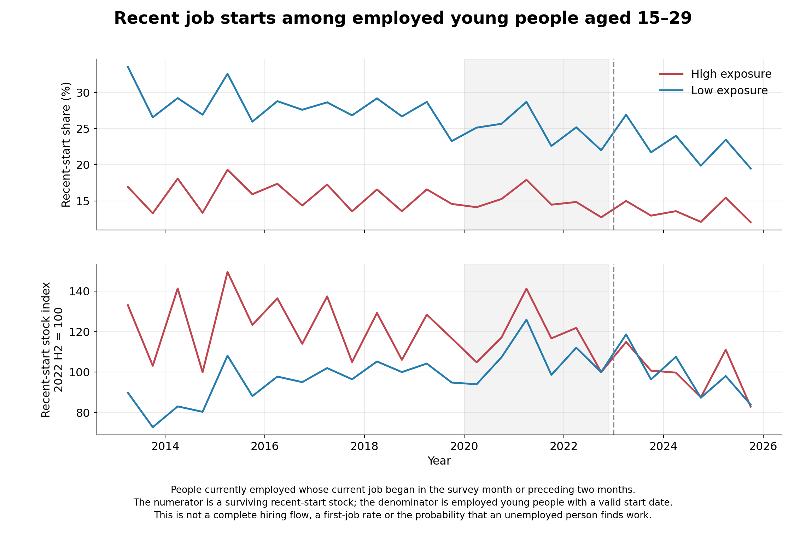

The measurement approach
What is Time-Horizon AI Exposure?
Time-Horizon AI Exposure (THAIE) measures potential AI exposure by combining what a task involves with how long it takes a human to complete it and the task lengths an AI agent can reliably handle. It extends conventional task exposure with a duration-based completion weight.
Two tasks can have similar AI-relevant content yet require very different lengths of sustained work. THAIE distinguishes them. As an agent’s time horizon expands, longer tasks receive greater weight. Throughout the labour-market analysis below, “AI exposure” refers to the fixed 2025 THAIE reference, unless a comparison is explicitly labelled.
How the measure is constructed
- Represent the task. Korean Dictionary of Occupations statements and English O*NET tasks are embedded using BAAI/bge-m3, placing their text in a shared representation.
- Estimate exposure and human duration. Separate ridge models transfer task-exposure labels from Eloundou et al. and log human-duration estimates from Anthropic Economic Index data to Korean statements. The exposure model averages the available human and GPT-4 labels before training. Duration labels are platform-harmonised, with activity-level fallbacks where task-level estimates are unavailable. These are transferred estimates, not stopwatch measurements of Korean workers.
- Apply the agent’s completion curve. A logistic duration weight is calibrated from METR’s 50% and 80% time horizons for each retained model snapshot. The horizon is expressed in human task minutes, not the agent’s running time.
- Aggregate to occupations. Task scores are averaged within each dictionary entry, then entry means are averaged within each three-digit KSCO occupation. Occupational scores are not weighted by employment or assumed time shares. Employment weights are used separately to define high- and low-exposure groups.
The calculation
THAIEs,m = Es × pm(d̂s)
pm(d̂s) = {1 + exp[bm log2(d̂s / H50,m)]}−1
bm = ln(4) / log2(H50,m / H80,m)
THAIEo,m = (1 / Jo) ∑j∈o [(1 / Sj) ∑s∈j THAIEs,m]
Es is estimated conventional task exposure on a 0–1 scale. d̂s is predicted human completion time in minutes. H50,m and H80,m are model m’s human-duration horizons at 50% and 80% success. Jo is the number of retained dictionary entries in occupation o, and Sj is the number of task statements in entry j. Every task in an entry and every entry in an occupation receives equal weight at its respective averaging stage.
A worked example. Using the retained 2025 GPT-5 curve (H50 ≈ 203 minutes; b ≈ 0.576), two hypothetical tasks with E = 0.80 but human durations of 50 and 400 minutes receive completion weights of approximately 0.76 and 0.36. Their THAIE scores are therefore about 0.61 and 0.29. The content score is identical; the duration constraint separates their potential exposure.
What changes relative to earlier approaches?
| Approach | What determines exposure? | Role of time |
|---|---|---|
| Conventional task exposure | Whether AI can assist or accelerate the task, represented here by the transferred score E. | A speed-up criterion can inform the original label, but our baseline E does not condition on absolute human task length. |
| THAIE | Task exposure multiplied by an agent-specific duration weight. | Absolute human task length is evaluated against the agent’s completion horizon. |
| Anthropic observed exposure | Theoretical feasibility combined with work-related Claude usage and automation patterns. | Task time shares weight occupational aggregation. |
Like Massenkoff and McCrory (2026), we begin with tasks and aggregate to occupations. Their measure incorporates observed Claude usage, distinguishes automated from augmentative use and weights tasks by their share of occupational time. THAIE instead conditions potential task exposure on an agent’s completion horizon. Our duration weight is not a time-share weight or a measure of adoption. The approaches address complementary questions about realised use and capability-constrained potential.
Our duration inputs also draw on Anthropic Economic Index estimates. That shared source does not make THAIE equivalent to Anthropic’s observed-exposure measure.
What the measure adds
THAIE provides a model-specific way to distinguish tasks with similar content exposure but different duration demands. It makes the exposure measure responsive to advances in sustained agent performance, while preserving a common task-score scale. The Korean application then examines employment patterns across age, sex and educational attainment using this measure.
Scope and source notes
The public explorer contains 39,102 statements, including 37,583 linked to 162 occupations and 1,519 without a retained occupational link. Unlinked statements remain searchable but do not enter occupational aggregates. METR’s evaluation suite primarily covers software, machine learning and cybersecurity tasks. Applying its curves to other occupations is a transfer assumption, not direct evidence of success on those tasks. Country-specific validation of task boundaries, human durations and completion standards remains outside this application. THAIE measures potential exposure, not adoption, automation rates or a causal employment effect.
METR task-completion time horizons · Eloundou et al., GPTs are GPTs · Massenkoff and McCrory, Labor market impacts of AI
The radar chart below shows how this duration adjustment changes the exposure landscape before we turn to Korean employment.
01 / The exposure landscape
AI exposure across selected occupations
The red solid line shows the 2025 reference. The purple dashed line shows the 2026 comparison, and the grey line shows conventional task exposure E. All three series use the same 20 occupations and the same raw score scale.

Existing analytical snapshots are retained, with GPT-5 H50 of 203 minutes for 2025 and Claude Opus 4.6 H50 of 718.8 minutes for 2026. Human durations and completion weights are estimates. The scores measure potential exposure, not observed adoption or employment effects.
02 / The overall employment picture
Growth can conceal a change in who holds the jobs
High-exposure occupations grew by 8.6% between 2022 and 2025. Within the same occupations, employment of people aged 15–29 fell by 12.4%, while employment of people aged 65+ rose by 63.9%. We begin with total employment, then break it down by age, sex, occupation and educational attainment.
Unless a model comparison is explicitly shown, AI exposure refers to the fixed 2025 THAIE reference. High and low are the upper and lower employment-weighted quintiles, with 29 and 25 occupations. Memberships use 2019–2021 weights and remain fixed across populations and years.
Exposure and observed occupational growth

The scatter covers all 162 occupations and observed employment growth. Its descriptive line is distinct from the trend-adjusted regression within high-exposure occupations.
03 / Who participates in the growth?
Young and older workers follow different paths
The age contrast is sharper in high exposure. Young employment changed by −12.4%, compared with −5.7% in low exposure; older employment changed by +63.9%, compared with +13.9%. Men’s and women’s high-exposure employment grew at similar rates. These are changes in employment stocks, rather than employment rates or causal effects of AI.

Who works in each exposure group?
The profiles describe group composition, while the figure above describes changes over time. Education is compared in the final section.
2025 worker characteristics
| Category | Characteristic | Low exposure | High exposure | Difference |
|---|---|---|---|---|
| Exposure | AI exposure score | 0.066 | 0.333 | +0.267 |
| Demographics | Mean age, years | 57.0 | 43.2 | -13.9 |
| Demographics | Women (%) | 45.5 | 51.3 | +5.8 |
| Demographics | Married (%) | 61.1 | 60.0 | -1.0 |
| Demographics | Aged 15–29 (%) | 8.4 | 13.8 | +5.4 |
| Demographics | Aged 55–64 (%) | 24.8 | 14.2 | -10.7 |
| Demographics | Aged 65+ (%) | 36.9 | 4.1 | -32.8 |
| Labour market | Weekly working hours | 33.3 | 39.4 | +6.1 |
| Labour market | Monthly pay, KRW million | 2.04 | 3.96 | +1.92 |
| Labour market | Regular employees (%) | 29.1 | 77.4 | +48.3 |
| Labour market | Self-employed (%) | 25.2 | 9.8 | -15.4 |
| Sample | Estimated employed persons, millions | 5.51 | 5.78 | +0.27 |
| Sample | Unweighted person-wave records | 159,023 | 71,677 | -87,346 |
2022 worker characteristics
| Category | Characteristic | Low exposure | High exposure | Difference |
|---|---|---|---|---|
| Exposure | AI exposure score | 0.067 | 0.335 | +0.268 |
| Demographics | Mean age, years | 55.8 | 41.8 | -14.0 |
| Demographics | Women (%) | 43.4 | 51.3 | +7.9 |
| Demographics | Married (%) | 63.0 | 60.6 | -2.4 |
| Demographics | Aged 15–29 (%) | 8.5 | 17.1 | +8.6 |
| Demographics | Aged 55–64 (%) | 27.2 | 11.7 | -15.5 |
| Demographics | Aged 65+ (%) | 30.9 | 2.7 | -28.2 |
| Labour market | Weekly working hours | 34.9 | 38.4 | +3.5 |
| Labour market | Monthly pay, KRW million | 1.93 | 3.51 | +1.58 |
| Labour market | Regular employees (%) | 27.8 | 75.8 | +48.0 |
| Labour market | Self-employed (%) | 25.2 | 10.2 | -15.0 |
| Sample | Estimated employed persons, millions | 5.78 | 5.32 | -0.46 |
| Sample | Unweighted person-wave records | 167,435 | 73,140 | -94,295 |
Recent job starts among young people

A recent start is a current job begun in the survey month or preceding two months. This surviving stock is not a complete hiring flow or a first-job rate.
Download recent-start aggregates
Trend-adjusted regression and supporting checks
Within high-exposure occupations, the manuscript’s model estimates a −4.62 log-point post-2022 relative employment break per fixed exposure standard deviation. Its 2,000-permutation coefficient p-value is 0.021, and occupation-exclusion coefficients remain negative. This conditional occupational gradient is a separate statistic from the age-group growth rates above.

Full demographic estimates and supporting checks
| Population | Break, log points | Cluster SE | Cluster p | Permutation p, coefficient |
|---|---|---|---|---|
| All employed persons | -4.62 | 1.30 | 0.0014 | 0.0210 |
| Aged 15–29 | -2.37 | 2.89 | 0.4185 | 0.5792 |
| Aged 15–34, sensitivity | -5.49 | 2.06 | 0.0128 | 0.0870 |
| Aged 65+ | +0.50 | 5.08 | 0.9223 | 0.9510 |
| Men | -4.55 | 1.95 | 0.0274 | 0.0570 |
| Women | -4.14 | 1.31 | 0.0037 | 0.0920 |
| Aged 55–64 | -2.37 | 3.63 | 0.5182 | 0.5112 |
The model uses annual log employment, occupation and year fixed effects, fixed 2019–2021 occupation employment weights and an exposure-specific linear trend. Exposure is standardised once within the candidate sample. There is no annual restandardisation. The outcome for young people includes ages 15–29; ages 15–34 are a sensitivity analysis. Zero employment cells are excluded from log regressions without a pseudocount.
The unrestricted event study rejects jointly flat pre-period gradients for the all-age sample. The trend-adjusted break describes a relative association and does not identify an effect of actual AI adoption. Neither the youth nor older-group coefficient establishes that the demographic contrast was caused by AI.

All regression specifications · Permutation results · Occupation exclusion results · Pre-period tests · Employment decomposition · Method specification
04 / A closer look at bachelor’s workers
Which ages and occupations drive the bachelor’s result?
The all-age bachelor’s coefficient of −5.84 log points does not carry over as a statistically established young-worker result. For ages 15–29, the same manuscript model gives −2.21 (cluster SE 4.04; permutation p = 0.608). For ages 40–54, it gives −8.75 (cluster SE 1.86; permutation p = 0.008). Omitting each occupation leaves the 40–54 coefficient between −9.44 and −7.95.

| Age | Break, log points | Cluster SE | Cluster p | Permutation p, coefficient | Occupation-years |
|---|---|---|---|---|---|
| Aged 15–29 | -2.21 | 4.04 | 0.589 | 0.608 | 360 |
| Aged 30–39 | -3.14 | 2.68 | 0.251 | 0.356 | 377 |
| Aged 40–54 | -8.75 | 1.86 | <0.001 | 0.008 | 377 |
| Aged 55–64 | -6.51 | 4.47 | 0.156 | 0.204 | 374 |
| Aged 65+ | +1.42 | 8.65 | 0.871 | 0.858 | 306 |
| All ages | -5.84 | 1.17 | <0.001 | 0.009 | 377 |
| Aged 15–34, sensitivity | -3.45 | 2.32 | 0.149 | 0.326 | 373 |
Occupation and age contributions to −5.84
The largest negative occupational contributions are telecommunications sales workers (−1.72 log points), secretaries and office support workers (−0.72), and transport and trade clerks (−0.62). Together they account for approximately 52.4% of the net coefficient. Leaving out telecommunications sales alone still gives −4.76.
The exact age allocation assigns −2.83 log points, approximately 48.6% of the net coefficient, to ages 40–54. Ages 30–39 contribute −1.40 and ages 15–29 contribute −0.72. This allocation is not an age-specific causal effect or a count of displaced workers; it decomposes the existing regression coefficient.
Separate occupation and age contributions

Which occupations account for the age allocation?
Within the 40–54 accounting allocation, telecommunications sales contributes −0.62 log points, customer service and monitoring −0.41, and transport and trade clerks −0.29. In the 15–29 allocation, telecommunications sales (−0.52) and secretarial support (−0.30) are partly offset by positive contributions from customer service and government administration. These offsets help explain why the all-age result cannot simply be assigned to young workers.

Download the full occupation-by-age allocation
Raw employment and the regression answer different questions
From 2022 to 2025, bachelor’s employment at ages 15–29 fell by 4.2% in high exposure and rose by 1.2% in low exposure. At ages 40–54 it rose by 14.5% and 7.3%. The negative 40–54 coefficient therefore describes a weaker exposure-related path relative to the fitted trend within the high group, not an absolute employment decline or a high-minus-low growth estimate.
Bachelor’s age-specific employment trajectories

Definitions and validation
All age regressions retain the same 29 high-exposure occupations, fixed 2025 AI exposure, once-only standardisation, 2019–2021 total occupation employment weights, occupation and year fixed effects, exposure-specific linear trend, cluster correction, 2,000 score permutations and occupation-exclusion checks. Ages 15–34 are the requested sensitivity analysis. Missing or zero subgroup outcomes are not replaced with a positive pseudocount.
As a supplementary multiplicity check, the 40–54 permutation coefficient p-value is 0.040 after Holm adjustment across the five non-overlapping age bands. The unadjusted manuscript tests remain the main estimates. The 40–54 result is robust within that age group; a significant coefficient in one age group and an insignificant coefficient in another is not by itself a test that the two slopes differ. These are conditional associations rather than identified effects of actual AI adoption.
The occupation allocation is the FWL numerator by occupation divided by its common denominator. For age allocation, age-specific employment changes from 2022 are divided by the logarithmic mean of the occupation’s total bachelor employment and its 2022 value. These components sum exactly to its log change. Applying the original regression functional makes the age components sum to −5.84. Unobserved age cells enter only the accounting identity as zero observed weighted employment, not the log regressions as imputed outcomes.
All 29 occupation contributions · Exact age allocation · Age regressions · Permutation tests · Occupation exclusions · Sample audit
Inspect the evidence
Occupation records, model comparisons and methods
Open the interactive occupation map and searchable task records
Use the map and search to inspect individual records. Model comparisons are optional; the main narrative uses the 2025 reference.
Occupation map
Each node is an occupation. Position separates predicted human task duration from content exposure. Brighter nodes have higher time-horizon AI exposure; node area is proportional to employment. Representative occupations are labelled.
Time-horizon AI exposure
0 · lowerHigher
Scroll or use + / − to zoom.
Drag to pan. Select a node for its record.
Time is a transferred prediction, not an observed Korean completion time. Employment is the survey-weighted mean of April and October waves, 2023–2025, across recorded ages and education groups. Node area is proportional to employed persons; the radius therefore follows a square-root scale. The 2026 model scenario does not imply that employment was measured in 2026. Colour uses a fixed scale across scenarios.
Search the analytical records
Occupations and tasks
Loading the task corpus, approximately 11 MB…
The initial view shows the ten highest time-horizon exposure occupations under GPT-5 (2025). Ranks always refer to all 162 mapped occupations; search filters do not redefine them. Human durations and exposure scores are estimates. Original Korean task wording is retained as source data.
Optional comparisonWhere does the horizon change the ranking most?Expand / collapse
The ten occupations with the largest absolute rank difference between BGE content exposure and BGE time-horizon exposure, among all 162 occupations. This comparison holds the encoder fixed. Larger rank changes are relative reordering, not observed automation or a rise in absolute exposure.
Content exposure rankTime-horizon exposure rank
| Occupation | Content exposure | Horizon exposure | Content rank | Horizon rank | Absolute rank gap |
|---|
Top ten by time-horizon exposure
Measurement, sources and interpretation
03 / Interpretation and provenance
Content exposure, conditioned on task length
The measurement rule
λs(m) = es × pm(d̂s)
es is predicted content exposure. d̂s is predicted human completion time in minutes. pm is the transferred model-specific completion curve evaluated at that duration. The horizon is measured in human task time, not AI runtime.
The weight lies between zero and one. Horizon exposure therefore cannot exceed the corresponding content score. A rank increase changes relative prominence within a specified population.
How scores are aggregated
Task scores are averaged within a dictionary entry. Entry means are then averaged within each three-digit KSCO occupation. No employment or task-frequency weights are applied to these occupational scores.
The explorer includes 37,583 mapped task statements and 1,519 statements without a retained occupational link. All 39,102 statements retain their own scores and source IDs. Sentence numbers are zero-based, as in the analytical files.
Observed and estimated information
The task wording comes from the Korean Dictionary of Occupations; the displayed IDs retain the analytical entry and sentence numbering. Content scores and human completion times are model predictions. The completion weights are transferred estimates. They have not been validated as Korean task-specific agent success probabilities.
Employment comparisons use fixed 2025 exposure quintiles selected with 2019–2021 employment weights. The original E5-selected 33 occupations are retained only for a separate replication check. The explorer’s rank comparisons cover all 162 mapped occupations. Longer horizons are capability scenarios, not forecasts of employment or national AI adoption.
Sources and coverage
- Korea Employment Information Service / Work24, Korean Dictionary of Occupations, 2020 source edition. Source IDs use the analytical KEIS2020 entry numbering, not live Work24 API identifiers.
- METR task-completion time horizons, four model snapshots retained from the analytical release. This explorer does not claim to show the latest frontier models.
- Anthropic Economic Index, economic primitives, source duration estimates used in the transfer model. These are estimates associated with AI-use conversations, not timed observations of Korean workers.
- O*NET, source task framework used in the transfer pipeline.
- Release metadata and English occupation labels. English occupation names are author translations, not official KSCO English labels.
Source text is reproduced with permission confirmed by the project owner. Original source rights remain with their respective holders. No Korean employment microdata or full manuscript is distributed here.
Scope of validation
Duration estimates are transferred across language and work contexts. Validating task boundaries, completion standards and human times for each country is outside this application. The explorer supports inspection and reproducibility of the index, rather than treating the scores as directly observed automation outcomes.
The presentation adapts the questions illustrated in Massenkoff and McCrory (2026) to Korean employment data. Our scores measure potential exposure. Their platform-use and unemployment measures are not replaced by Korean employment stocks.
05 / Finally, educational attainment
How does employment and exposure differ by education?
Employment grew in both exposure groups for all three degree categories between 2022 and 2025. Bachelor’s employment grew by 14.6% in high exposure and 17.7% in low exposure; master’s employment grew by 18.9% and 16.5%. Doctoral employment grew by 46.3% and 101.8%, respectively, but the low-exposure doctoral population rose from only about 2,100 to 4,200 people.
| Degree | High 2022 | High 2025 | High change | Low 2022 | Low 2025 | Low change |
|---|---|---|---|---|---|---|
| Bachelor’s | 2,785,651 | 3,193,287 | +14.6% | 520,501 | 612,878 | +17.7% |
| Master’s | 313,527 | 372,755 | +18.9% | 29,757 | 34,681 | +16.5% |
| Doctorate | 41,920 | 61,328 | +46.3% | 2,097 | 4,232 | +101.8% |
Counts are estimated employed persons, annual survey-weighted means of April and October. The same 29 high- and 25 low-exposure occupations are used for every degree. Education follows the manuscript’s retained attainment proxy. This describes all-age workers, not new graduates or graduate employment rates.
For comparison, high-exposure employment grew by 7.9% for bachelor’s workers, 0.3% for master’s workers and 1.9% for doctoral workers during 2019–2022. All three high-exposure degree stocks therefore grew faster in 2022–2025. The regression below addresses the exposure gradient within that group, rather than whether the whole group stopped growing.
Degree-specific regression results and validation
The bachelor’s finding under the manuscript model
Within the 29 high-exposure occupations, the bachelor’s post-2022 coefficient is −5.84 log points per fixed exposure standard deviation (cluster SE 1.17; cluster p < 0.001). The manuscript’s 2,000-permutation test gives p = 0.009 for the coefficient and 0.002 for its studentised statistic. Leaving out one occupation at a time gives coefficients from −6.59 to −4.76, all negative.
This is a weaker path relative to the fitted exposure-specific trend among the more exposed occupations within the high group. It is compatible with a rising bachelor’s employment stock in that group. It is not a claim that bachelor’s employment fell absolutely or that the high–low growth gap equals the regression coefficient.

| Degree | Break, log points | Cluster SE | Cluster p | Permutation p, coefficient | Occupation-years |
|---|---|---|---|---|---|
| Bachelor’s | -5.84 | 1.17 | <0.001 | 0.009 | 377 |
| Master’s | +2.11 | 3.64 | 0.567 | 0.681 | 377 |
| Doctorate | +14.31 | 15.44 | 0.362 | 0.300 | 331 |
The master’s and doctoral stocks show substantial growth, but the same model does not establish the bachelor’s negative-break pattern for those degrees. Sparse doctoral observations also make the estimated exposure gradient less precise.
The equation, fixed 2025 score, once-only standardisation, occupation and year fixed effects, exposure-specific linear trend, fixed 2019–2021 total occupation employment weights, cluster correction and 2,000 permutations are unchanged. Missing degree cells remain missing and are omitted from log regressions without a pseudocount.
The median annual doctoral occupation cell contains 10 person-wave records in high exposure and 2 in low exposure. The low doctoral aggregate contains 84 person-wave records in 2022 and 144 in 2025. Its 101.8% increase should therefore be read together with the small level, rather than as an estimated AI effect.
The direct master’s-minus-bachelor’s break contrast is +7.95 log points (nominal p = 0.027). The Holm-adjusted p across the three exploratory degree comparisons is 0.081. Doctoral contrasts are imprecise. The unrestricted pre-period flatness tests reject; the main coefficient is conditional on the manuscript’s linear trend rather than an identified adoption effect.
All high, low and full-sample regressions · Permutation tests · Occupation exclusion checks · Pre-period checks · Sample audit · Direct degree contrasts · Method
Download annual trajectories · Download growth comparison · Download figure PDF
Educational composition of the high- and low-exposure workforces
These percentages use each exposure group as the denominator. The final distribution below instead uses each education level as the denominator.
| Category | Characteristic | Low exposure | High exposure | Difference |
|---|---|---|---|---|
| Education | Below upper secondary (%) | 35.5 | 1.1 | -34.4 |
| Education | Upper secondary (%) | 41.5 | 19.3 | -22.1 |
| Education | Junior college (%) | 11.2 | 16.9 | +5.7 |
| Education | Bachelor’s degree (%) | 11.1 | 55.2 | +44.1 |
| Education | Master’s degree (%) | 0.6 | 6.4 | +5.8 |
| Education | Doctorate (%) | 0.1 | 1.1 | +1.0 |
The exposure distribution within each education level
To close the comparison, the chart shows how workers at each education level are distributed across low, middle and high exposure. Each row has its own education population as the denominator and sums to 100%.

| Educational attainment | Low exposure | Middle | High exposure |
|---|---|---|---|
| Upper secondary or below | 34.3% | 56.2% | 9.5% |
| Junior college | 12.9% | 66.7% | 20.4% |
| Bachelor’s | 6.2% | 61.6% | 32.2% |
| Master’s | 2.5% | 70.6% | 26.9% |
| Doctorate | 1.3% | 79.5% | 19.1% |
The same occupational groups apply to every education level. These are all-age employed people under the retained attainment proxy. Download percentages · Download employment counts · Download figure PDF